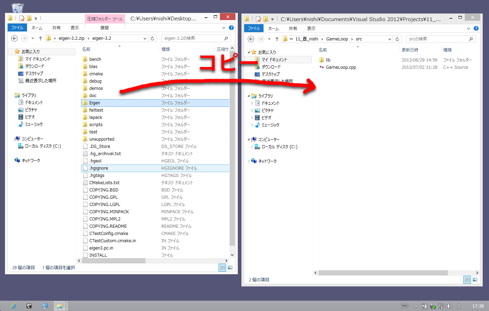
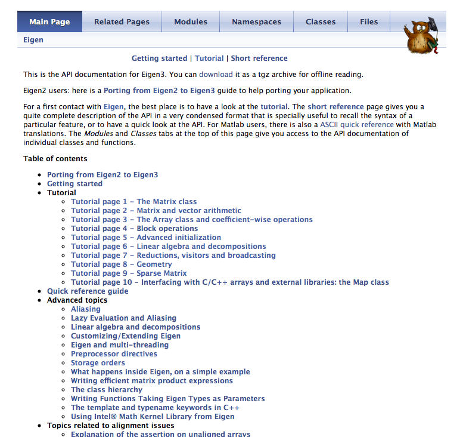

Eigenの使い方
Table of Contents
1 Eigenとは??
行列やベクトルを効率よくC++で扱う為のライブラリです。「アイゲン」と読みます。このマニュアルでは、以下の内容を説明しています。
- ゲームでよく使われるであろうベクトル、行列操作についてのサンプルコード
- OpenGLやDirectXとの連携
なお、マニュアルでは以下の事柄については言及しておりませんのでご容赦ください。
- ベクトルや行列の性質
- Eigenの詳細な実装内容や最適化に関して
2 インストール
同梱のeigen-3.2.zipを解凍。自分のプロジェクトのソースファイルと同じ場所にeigen-3.2/Eigenを丸ごとコピーします。Eigenはヘッダのみで構成されているので、ビルドの必要はありまん。これで準備完了!!

3 最初のコード
Eigenには数多くの定義済みベクトルと行列があります。とくに、以下の命名法則で用意されたものを使うとよいでしょう。
- ベクトル
Eigen::Vector[次元数][i, f, d]- Eigen::Vector2f -> float型の二次元ベクトル
- Eigen::Vector3d -> double型の三次元ベクトル
- Eigen::Vector4i -> int型の四次元ベクトル
- 行列
Eigen::Matrix[行と列の数][i, f, d]- Eigen::Matrix3f -> float型の3x3行列
- Eigen::Matrix4d -> double型の4x4行列
// Windowsでもし謎のメモリアクセス違反が発生する場合、 // メモリの16バイト整列を禁止すると解決する場合がある //#define EIGEN_DONT_ALIGN #include <iostream> // Eigenのコア機能とジオメトリ機能を使う #include "Eigen/Core" #include "Eigen/Geometry" int main() { // 以下サンプルコードでは名前空間Eigenを省略 using namespace Eigen; // 二次元ベクトルv1の定義。初期値は未定義 Vector2f v1; // 初期化はコンストラクタで指定できる Vector2f v2(1.0f, 0.5f); Vector3f v3(0.0f, 1.0f, -1.0f); std::cout << "v2\n" << v2 << std::endl; std::cout << "v3\n" << v3 << std::endl; // double型3x3行列の定義。初期値は未定義 Matrix3d m; // 行列の初期値はコンストラクタで指定できないので、 // 値は以下のようにまとめて代入する m << 1.0, 0.0, 0.0, 0.0, 1.0, 0.0, 0.0, 0.0, 1.0; std::cout << "m\n" << m << std::endl; }
4 ベクトル操作
加減算、内積、外積、正規化など一通りの計算はこんな感じに書けます。
#include <iostream> #include "Eigen/Core" #include "Eigen/Geometry" int main() { using namespace Eigen; // 三次元ベクトルの定義。初期値はコンストラクタで指定 Vector3f v1( 0.0f, 1.0f, 2.0f); Vector3f v2(-0.5f, 2.0f, -1.5f); // 各要素への読み書き float x, y, z; x = v1.x(); y = v1.y(); z = v1.z(); std::cout << "x:" << x << " y:" << y << " z:" << z << std::endl; v1.x() = x; v1.y() = y; v1.z() = z; // 読み書きは、こういう書き方もできる v1(0) = x; v1(1) = y; v1(2) = z; x = v1[0]; y = v1[1]; z = v1[2]; // こういう代入も可能 v1 << 0.5f, 1.2f, -2.0f; // コピー Vector3f v0; v0 = v1; std::cout << "v0\n" << v0 << std::endl; std::cout << "v1\n" << v1 << std::endl; // 加算 Vector3f v3; v3 = v1 + v2; std::cout << "v3\n" << v3 << std::endl; // 減算 Vector3f v4; v4 = v2 - v1; std::cout << "v4\n" << v4 << std::endl; // 各要素を乗算(ベクトル同士の乗算、除算は無い) Vector3f v5; v5 = v1 * 2.0f; std::cout << "v5\n" << v5 << std::endl; // 各要素を除算 Vector3f v6; v6 = v2 / 2.0f; std::cout << "v6\n" << v6 << std::endl; // 内積 float dot = v1.dot(v2); std::cout << "dot v1, v2\n" << dot << std::endl; // 外積 Vector3f cross; cross = v1.cross(v2); std::cout << "cross v1, v2\n" << cross << std::endl; // ベクトルの長さ float norm = v1.norm(); std::cout << "v1.norm " << norm << std::endl; // 正規化(長さ1)したベクトルを生成 Vector3f n; n = v1.normalized(); std::cout << "normalized\n" << n << std::endl; // ベクトルを正規化する v1.normalize(); std::cout << "normalize v1\n" << v1 << std::endl; // あらかじめ用意されている値 // 単位ベクトル(1, 0, 0) Vector3f identity = Vector3f::Identity(); std::cout << identity << std::endl; // (0, 0, 0) std::cout << Vector3f::Zero() << std::endl; // (1, 1, 1) std::cout << Vector3f::Ones() << std::endl; // (1, 0, 0) std::cout << Vector3f::UnitX() << std::endl; // (0, 1, 0) std::cout << Vector3f::UnitY() << std::endl; // (0, 0, 1) std::cout << Vector3f::UnitZ() << std::endl; // ランダムな値 std::cout << Vector3f::Random() << std::endl; }
5 行列操作
行列の操作はこんな感じに書けます。Eigenではベクトルも行列もほぼ同じ感覚で扱えるように設計されています。
#include <iostream> #include "Eigen/Core" #include "Eigen/Geometry" int main() { using namespace Eigen; // 行列の場合はコンストラクタで各要素の値を個別に初期化出来ない Matrix3f m1; // あらかじめ用意された「単位行列」「全て0」「全て1」や、他の行列を渡す方法は可能 Matrix3f m2(Matrix3f::Identity()); Matrix3f m3(Matrix3f::Zero()); Matrix3f m4(Matrix3f::Ones()); Matrix3f m5(m4); Matrix3f m6(Matrix3f::Random()); { // 各要素にまとめて値をコピーする Matrix3f m; m << 1.0f, 0.0f, 1.0f, -1.0f, 0.5f, 0.0f, 2.0f, -5.0f, 2.5f; std::cout << m << std::endl; } { // 行列の要素へのアクセス // matrix(列, 行) // 「行」が横方向のインデックス // 「列」が縦方向のインデックス // m2[0, 1] や m2[0][1] などの書き方はできない m2(2, 0) = 1.0f; float value = m2(0, 2); } { Matrix3f m; // 加算 m = m2 + m4; std::cout << m << std::endl; // 減算 m = m2 - m4; std::cout << m << std::endl; // 各要素への乗算 m = m2 * 2.0f; std::cout << m << std::endl; // 各要素への減算 m = m2 / 2.0f; std::cout << m << std::endl; // 行列同士の乗算 m = m2 * m4; std::cout << m << std::endl; } { // 逆行列 Matrix3f m(Matrix3f::Random()); Matrix3f m_tmp = m.inverse(); std::cout << "inverse:\n" << m_tmp << std::endl; // 共役行列 m_tmp = m.conjugate(); std::cout << "conjugate:\n" << m_tmp << std::endl; } { // 4x4行列の一部を切り取って3x3行列へコピー // | a b c d | | a b c | // | e f g h | -> | e f g | // | i j k l | | i j k | // | m n o p | Matrix4f m_4x4; m_4x4 << 0.0f, 1.0f, 2.0f, 3.0f, 4.0f, 5.0f, 6.0f, 7.0f, 8.0f, 9.0f, 10.0f, 11.0f, 12.0f, 13.0f, 14.0f, 15.0f; Matrix3f m_3x3 = m_4x4.block(0, 0, 3, 3); std::cout << "4x4 -> 3x3\n" << m_3x3 << std::endl; // 4x4行列の一部を切り取ってベクトルへコピー // | a b c d | // | e f g h | -> | g k o | // | i j k l | // | m n o p | Vector3f v = m_4x4.block(1, 2, 3, 1); std::cout << "4x4 -> 3\n" << v << std::endl; } { // 転置行列 // | a b c | | a d g | // | d e f | -> | b e h | // | g h i | | c f i | Matrix3i m; m << 1, 2, 3, 4, 5, 6, 7, 8, 9; std::cout << "transpose:\n" << m.transpose() << std::endl; } }
6 行列の「行」と「列」
Eigenは「行(row)」と「列(colmn)」の各要素が以下のように格納されています。これを『「列」優先(colmn major)』といいます。
| a b c |
| d e f | -> { a, d, g, b, e, h, c, f, i }
| g h i |
これを『「行」優先(row major)』にする場合は、以下のサンプルコードのように自分で行列の定義を行います。
#include <iostream> #include "Eigen/Core" #include "Eigen/Geometry" int main() { using namespace Eigen; // int型、3x3、「行」優先の行列を定義 typedef Matrix<int, 3, 3, RowMajor> Mat3i; // Eigenのデフォルトは「列」優先(ColMajorは省略できる) // typedef Matrix<int, 3, 3, ColMajor> Mat3i; Mat3i m; m << 1, 2, 3, 4, 5, 6, 7, 8, 9; // 「行」優先の場合は 1, 2, 3, 4, 5, 6, 7, 8, 9 // 「列」優先の場合は 1, 4, 7, 2, 5, 8, 3, 6, 9 となる const int* data = m.data(); for (int i = 0; i < 9; ++i) { std::cout << data[i] << " "; } std::cout << std::endl; }
7 クォータニオン
クォータニオンは以下のように扱います。Eigenであれば、かなり直感的にクォータニオンも扱えます。
#include <iostream> #include "Eigen/Core" #include "Eigen/Geometry" int main() { using namespace Eigen; // 変数を定義。値は未定義 Quaternionf q1; // コンストラクタで値(w, x, y, z)を渡して初期化 Quaternionf q2(1.0f, 0.0f, 0.25f, 0.5f); std::cout << q2.x() << "," << q2.y() << "," << q2.z() << "," << q2.w() << std::endl; // コンストラクタで角度とベクトルを渡して初期化 Quaternionf q3(AngleAxisf(0.1f, Vector3f::UnitY())); // ２つのベクトルからクオータニオンを求める Quaternionf q4 = Quaternionf::FromTwoVectors(Vector3f::UnitX(), Vector3f::UnitZ()); // 単位クオータニオン(0, 0, 0, 1) q4 = Quaternionf::Identity(); std::cout << q4.x() << "," << q4.y() << "," << q4.z() << "," << q4.w() << std::endl; // 乗算 Quaternionf q_mul = q2 * q3; { // 逆クオータニオンを求める Quaternionf q = q4.inverse(); std::cout << "Inverse:" << q.x() << "," << q.y() << "," << q.z() << "," << q.w() << std::endl; } { // 共役クオータニオンを求める Quaternionf q = q4.conjugate(); std::cout << "Conjugate:" << q.x() << "," << q.y() << "," << q.z() << "," << q.w() << std::endl; } // 内積 float dot = q3.dot(q4); // 回転ベクトルの長さ float norm = q3.norm(); // 正規化 q3.normalize(); Quaternionf q_normalized = q4.normalized(); { // 球面線形補間 // q3→q4を t[0, 1.0] で補間する float t = 0.5f; Quaternionf q = q3.slerp(t, q4); } }
8 アフィン変換
ベクトル、行列、クォータニオンを連携して使う事で、3D空間での座標変換が簡単に行えます。Eigenでは、アフィン変換を専用に定義された型(内部は4x4行列)を使って行います。
#include <iostream> #include "Eigen/Core" #include "Eigen/Geometry" int main() { using namespace Eigen; // 平行移動(x, y, z) Translation<float, 3> translation = Translation<float, 3>(10.0f, 0.5f, -3.0f); // スケーリング DiagonalMatrix<float, 3> scaling = Scaling(2.0f, 1.5f, 1.0f); // 回転(クォータニオン) Quaternionf rotate(AngleAxisf(0.2f, Vector3f::UnitY())); // アフィン変換用行列 Affine3f matrix; // 各要素を掛け合わせていけば、最終的な変換行列が求まる matrix = translation * scaling * rotate; // p0を変換行列で変換してp1に格納 Vector3f p0(1.0f, -1.0f, 0.5f); Vector3f p1 = matrix * p0; std::cout << "p0\n" << p0 << std::endl; std::cout << "p1\n" << p1 << std::endl; { // クォータニオンだけでの座標変換も可能 Quaternionf q(AngleAxisf(0.1f, Vector3f::UnitY())); Vector3f v1(1.0f, 0.0f, -1.0f); Vector3f v2 = q * v1; std::cout << "q * v1\n" << v2 << std::endl; } // 行列(内部は4x4の行列)の各要素への直接読み書き matrix(0, 0) = 1.0f; float value = matrix(1, 1); // 汎用的な行列への変換にはメンバ関数matrixを使う const Matrix4f& m = matrix.matrix(); }
9 2Dでの回転とか平行移動とか
Eigenでは、2Dでの座標変換も用意されています。
#include <iostream> #include "Eigen/Core" #include "Eigen/Geometry" int main() { using namespace Eigen; Vector2f v1(1.0f, 0.0f); // 回転 Rotation2Df rotate(3.1415f); // 平行移動 Translation<float, 2> translation = Translation<float, 2>(10.0f, 0.5f); // スケーリング DiagonalMatrix<float, 2> scaling = Scaling(2.0f, 1.5f); // 横着して変換行列の計算とベクトルの計算をまとめて書ける Vector2f v2 = rotate * translation * scaling * v1; std::cout << v2 << std::endl; // 一旦行列にしたい場合 Affine2f m; m = rotate * translation * scaling; Vector2f v3 = m * v1; std::cout << v3 << std::endl; }
10 OpenGLやDirectXへ行列を渡す
OpenGLやDirectXでは、4x4の行列が連続してメモリに並んだ配列を要求しますが、Eigenの場合はメンバ関数を使って簡単に取り出せます。
#include <GL/gl.h> // OSXの場合パスが違う //#include <OpenGL/gl.h> #include "Eigen/Core" #include "Eigen/Geometry" int main() { using namespace Eigen; // 汎用的な行列の場合 Matrix4f m(Matrix4f::Identity()); glPushMatrix(); // メンバ関数dataで、4x4の行列をconst float* の値を取り出せる glLoadMatrixf(m.data()); // 色々処理 glPopMatrix(); // アフィン変換行列の場合 Affine3f affine(Affine3f::Identity()); glPushMatrix(); // メンバ関数dataで、4x4の行列をconst float* の値を取り出せる glLoadMatrixf(affine.data()); // 色々処理 glPopMatrix(); }
DirectXの場合は「行」優先(row major)なので、前述した方法で定義した行列を使う必要があります。
11 Arrayクラス
Eigenのリファレンスにはこう書かれています。 "The Array class provides general-purpose arrays, as opposed to the Matrix class which is intended for linear algebra. Furthermore, the Array class provides an easy way to perform coefficient-wise operations, which might not have a linear algebraic meaning, such as adding a constant to every coefficient in the array or multiplying two arrays coefficient-wise."
使ってみた感じ、「行列特有の計算は行わないで、各要素に対して一貫した計算を適用したい」場合に使えそうです。詳しくは、Eigenリファレンスマニュアル内「Tutorial page 3 - The Array class and coefficient-wise operations」を参照。
#include <iostream> #include "Eigen/Core" int main() { using namespace Eigen; // ベクトル的な定義 Array3f a(1.0f, 2.0f, 3.0f); // 行列的な定義 Array33f a1; a1 << 1, 2, 3, 4, 5, 6, 7, 8, 9; Array33f a2; a2 << -1, -2, -3, -4, -5, -6, -7, -8, -9; // 各要素ごとに計算する std::cout << "a1 + a2\n" << a1 + a2 << std::endl; std::cout << "a1 - a2\n" << a1 - a2 << std::endl; std::cout << "a1 * a2\n" << a1 * a2 << std::endl; std::cout << "a1 / a2\n" << a1 / a2 << std::endl; // 各要素ごとの簡単な演算も準備されている std::cout << "a1.sqrt()\n" << a1.sqrt() << std::endl; std::cout << "a2.abs()\n" << a2.abs() << std::endl; Matrix3f m; m << 9, 8, 7, 6, 5, 4, 3, 2, 1; // Matrix * Array は、Matrixのarrayメソッドで変換してから std::cout << "m * a1\n" << m.array() * a1 << std::endl; // Array -> Matrix も可能 Matrix3f result; result = (m.array() * a1).matrix(); std::cout << "m * a1\n" << result << std::endl; }
12 リファレンスマニュアル
同梱のeigen-3.2.zipを解凍、eigen-3.2/doc/html/index.html が、Eigenのリファレンスマニュアルです。より詳しいチュートリアルや、APIの詳細については、こちらを参照のこと。英語だからと諦めないで、じっくりと取り込んでみてください。

13 あわせて読みたい
- Eigen公式サイト ⇒http://eigen.tuxfamily.org/index.php?title=Main_Page
より詳しい情報や、最新のリリースの関しては、公式サイトを参照してください - Eigen C++で線形代数を ⇒http://www.singularpoint.org/blog/c/eigen_1/
有志の方のわかりやすいサンプル集です。